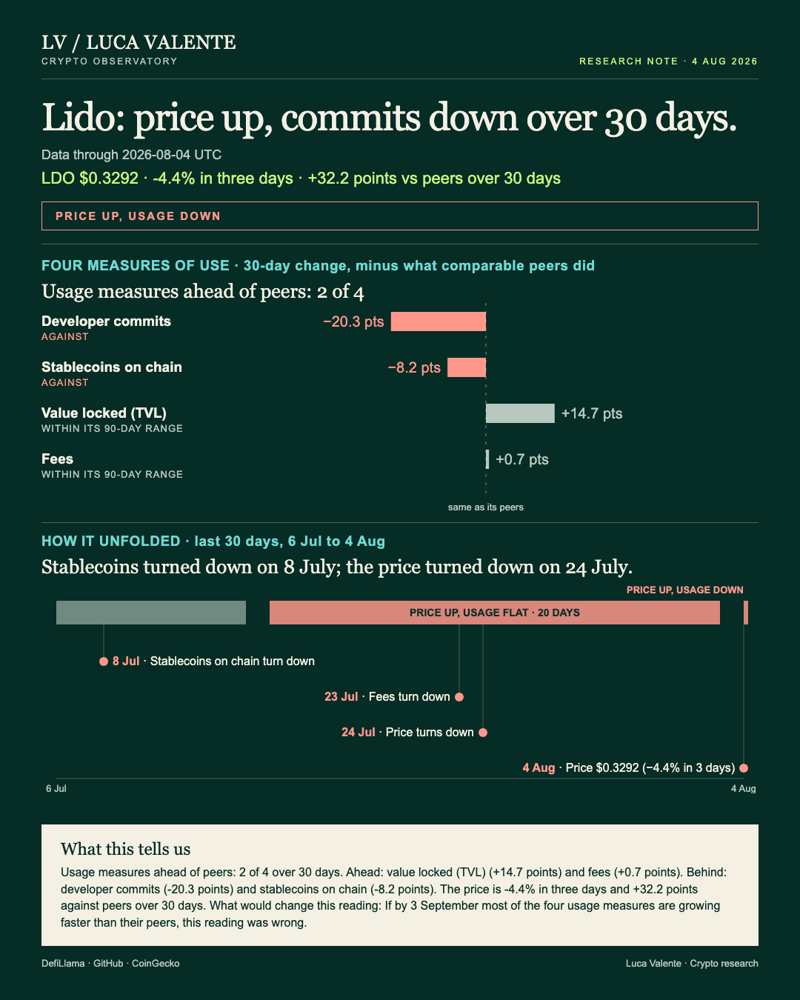
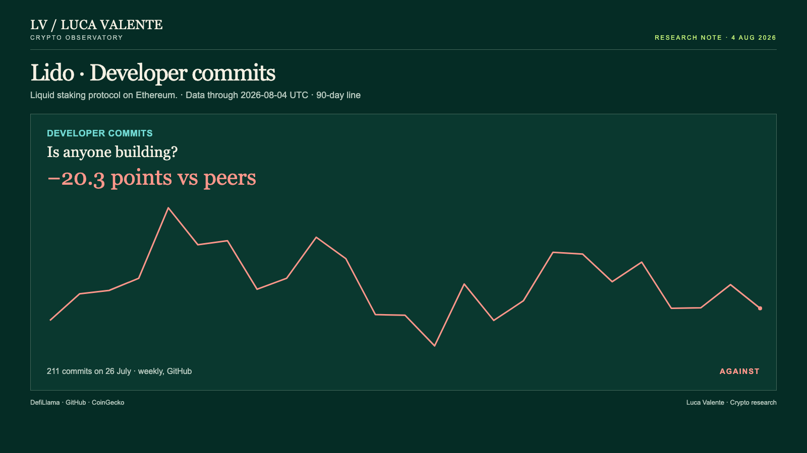
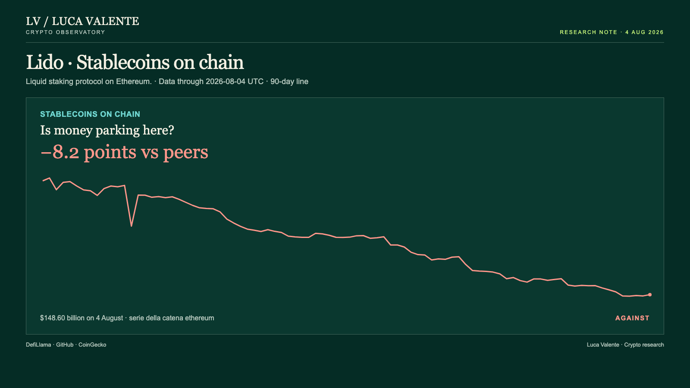

Training note, written on 23 September 2026 from data as of 4 August 2026. Not part of the published series.
20.3 Points Behind Peers On Lido's Developer Commits

Lido's price is rising. Its record of actual use points both ways.
That gap matters because usage, not price, is the plainer sign of whether people are putting money to work here, or just trading a token. Lido is a liquid staking protocol on Ethereum. It lets people stake ether and get a token back they can use elsewhere, while the original stake keeps working. LDO is its own governance token, and it trades openly, so the price below is comparable to other tokens like it.
The cover header spells it out: price up, usage down.
As of 4 August, LDO closed at $0.3292. That's up 1.1% from the day before. Three days earlier it stood at $0.3445, so the last three days are down 4.4%. Over 30 days the price is up 20.9%, measured from $0.2723 on 5 July. That's 32.2 points ahead of the median among the nine liquid-staking entities with a listed price, which fell 11.4% over the same stretch. Across the last 90 days the price ranged between a low of $0.2399 on 1 July and a high of $0.4133 on 11 May. Today's $0.3292 sits inside that band.
Commits, the code changes logged in Lido's public repositories, were the first to change course. Their direction flipped upward the week of 28 June, five weeks back, and they've gained ground in three of five weeks since. Stablecoins on chain went the other way on 8 July, 27 days back, slipping on 20 of the 28 days that followed. Fees gave way next, on 23 July, 12 days back, falling on 10 of the next 13 days. The price itself turned on 24 July, down on eight of the following 12 days. Value locked was the last to move, on 30 July, five days back, down on four of six days that followed.
Lido sits in a group of 33 liquid-staking protocols. Each of the four usage measures below is compared only with the group members that report that same number, Lido included. That's 20 for fees, 13 for developer commits, 30 for stablecoins on chain, 28 for value locked.
On fees, Lido took in $1.18 million on 4 August, up 3.3% from the day before. Over 30 days fees rose 7.9%. Those 20 had a median gain of 7.3% over the same stretch. Lido is 0.7 points ahead of that median, which puts it in the middle of the group. This looks like something the whole group is doing.
Developer commits read differently. The count for the week of 26 July to 1 August was 211. The week before, it was 252. Commits fell 23.7% over 30 days. Those 13 had a median change of -3.3% over the same stretch. Lido is 20.3 points behind that median. That gap looks like Lido's own, not the group's: its peers, taken together, were close to flat. Over the previous 12 full weeks, commits swung between a high of 308 and a low of 146. At 211, this week sits inside that range, not below it.

Stablecoins on Ethereum, the chain Lido runs on, stood at $148.60 billion on 4 August, up 0.1% from the day before. This number covers the whole chain, not Lido's own balance sheet. Over 30 days it fell 3.6%. Those 30, each reporting the same figure for its own chain, had a median gain of 4.6%. Ethereum sits 8.2 points behind that median. That gap belongs to the chain, not to Lido on its own.

Set against that, value locked in Lido's contracts was $17.47 billion on 4 August, down 0.8% on the day but up 7.4% over 30 days. Those 28 had a median change of -7.3% over the same 30 days. Lido is 14.7 points ahead of that median. Over the same 90 days, value locked swung between $13.90 billion and $21.21 billion. Today's $17.47 billion sits inside that range. If usage here were simply drying up, value locked is the one number that doesn't fit that story. It doesn't settle the question alone: commits and stablecoins are both still behind their peers, and neither has caught up yet.
Taken together, fees and value locked are ahead of their 30-day peer medians. Developer commits and stablecoins on chain are behind. Only one of those four gaps looks like Lido's own, rather than the group's or the chain's: developer commits.
None of this comes with a reason attached: nothing here says why fees ticked up on the day or why commits slipped the week before. There's no announcement or news behind any of it. There's no count of users or wallets either. This reading leans on four numbers only: fees, value locked, developer commits, and stablecoins on chain. None of them says how many people are behind them. There's no trading-volume number in this reading, and no L2-transaction count either. And the numbers stop on 4 August: whatever happened after that isn't in them.
The fee and value-locked gaps read as ordinary to me: both levels still sit inside their own 90-day ranges. The commit gap is the one I can't wave off, even with 211 sitting inside its 12-week range. The number that will decide this isn't one figure. It's a count. If by 3 September most of the four usage measures are growing faster than their peers, this reading was wrong.
Money and code are pulling apart here. Which one gives way first?
Sources: DefiLlama, CoinGecko, GitHub.
Peer group: 33 liquid staking protocols tracked by DefiLlama (who they are). 'Net of the group' is the 30-day change minus the group's median.
Not financial advice. This is a research note based on public on-chain data.